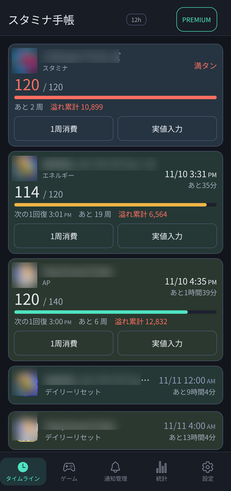

📖 はじめに
「スタミナ手帳」は、遊んでいる複数のスマホゲーム・ソーシャルゲームのスタミナ残量、全快予定時刻、デイリー/週間/月間リセット時刻、イベントやバナーの終了時刻をひと目で把握できるスタミナ総合管理アプリです。
端末内完結で動作し（自前サーバー不要）、スタミナ満タン前の事前通知、ゲームプレイ中に画面端へ重ねて操作できる「フローティング計算機」や「フローティングガチャカウンター」、スタミナの溢れ量・周回数の統計記録など、ゲームプレイヤーに便利な機能が満載です。

🎯 やりたいことから探す
日々のゲームプレイでよくある操作や知りたい機能の解説ページへすぐにジャンプできます。
📚 機能別ガイド一覧
1. タイムライン・スタミナ管理
全快時刻や次の回復までの時間、溢れ累計の確認。ワンタップの1周消費や実値入力、リセット時刻一覧の使い方を解説。
2. ゲーム登録とスタミナ・フリー項目
アイコン・ゲーム名・リセット時刻の登録、スタミナ回復間隔や上限、期間限定バナーを管理するフリー項目の設定方法を解説。
3. ゲーム常駐便利ツール
ゲームをプレイしながら画面端に重ねて使える「フローティング簡易計算機」と「簡易ガチャカウンター」の便利な使い方を解説。
4. 通知管理
スタミナ全快前（10分前・30分前など）や、デイリー/週間/月間リセット前の通知設定、通知履歴の確認方法を解説。
5. 統計・スキン・暗号化バックアップ
直近30日の周回実績や溢れ量のグラフ統計、ライト/ダークスキン切り替え、パスワード付きバックアップと復元手順を解説。
6. ホーム画面ウィジェット
次の予定を表示する1件版・小、直近の予定を並べる一覧版、選んだゲームだけを表示するゲーム別の4種類。追加方法とPREMIUM機能の範囲を解説。
❓ よくある質問（FAQ）
はい。1つのゲームの中に複数のスタミナ項目（AP、BP、エネルギーなど）を追加して、それぞれの回復速度や上限を個別に管理・通知できます。
Android端末の「他のアプリの上に重ねて表示」の権限が必要です。初回起動時またはツール画面で権限の許可案内が表示されたら、許可をオンにしてください。
はい。設定した回復間隔（例：5分で1回復）に基づいて自動計算されるため、アプリを起動していなくても正確な現在値と全快予定時刻を算出します。
はい。画面右上の「12h / 24h」トグルボタンをタップするか、設定画面の「時刻の表記」からいつでも切り替え可能です。